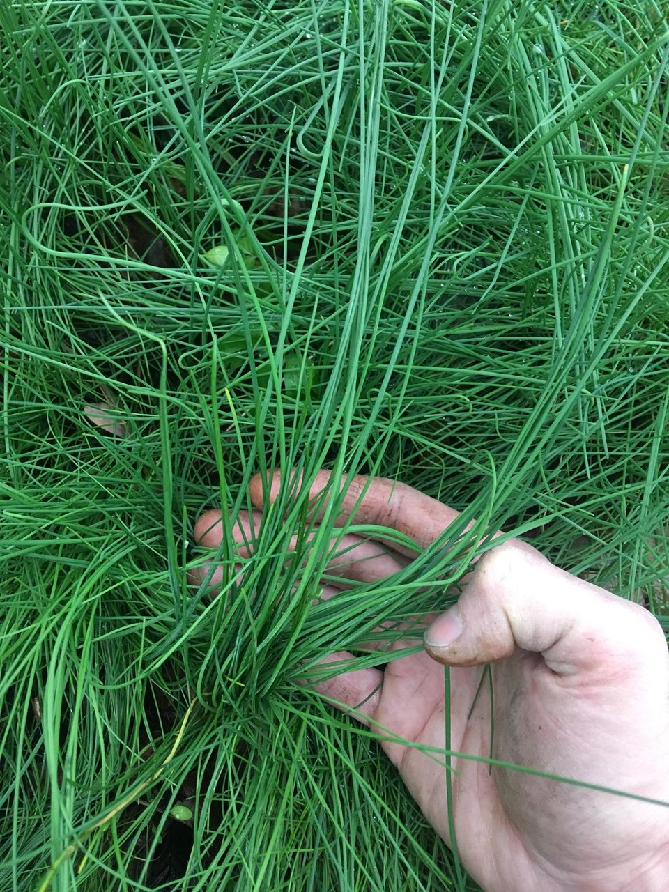

Consiglio
E' una bulbosa spontanea, si trova però anche al supermercato. La ricetta per condirla e utilizzarla poi, per bruschette, insaporire insalate, carni arrosto o lesse è semplice: basta lavare bene l'erba, togliere le parti sciupate, tagliarla a pezzettini piccoli piccoli, unire tanto olio evo, sale, limone, pepe rosa o nero a piacimento e lasciare insaporire almeno un paio d'ore o tre. Se l'erba cipollina è stata strappata con il suo bulbo, si utilizza anche quello. Dura anche 2-3 in giorni in frigo.
Mariella